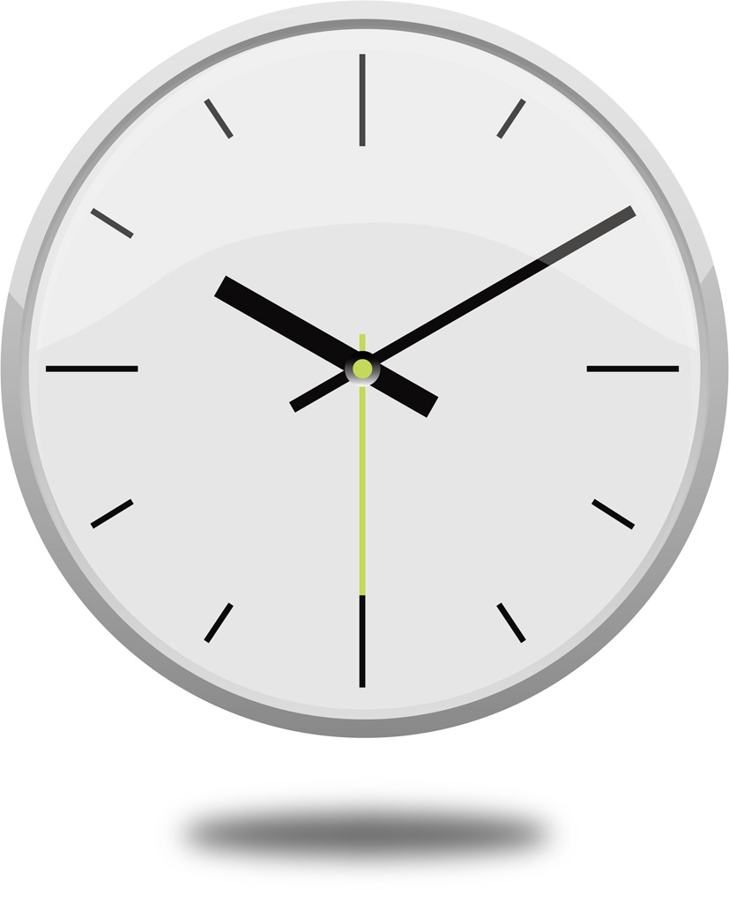

<ons-toolbar>
    <div class="center">タイマー</div>
</ons-toolbar>

<div style="text-align: center">
    
    <br/>
    <div id="timer_display">00時間00分00秒</div>
    <br />
    <ons-button ng-click="myNavigator.pushPage('bomb_tabbar.html')">
        到着
    </ons-button>
</div>
